Contexto
El conjunto de datos sobre vinos se ha recopilado con el propósito de analizar y evaluar las características químicas y sensoriales de diversas variedades de vinos. Estos datos son fundamentales para la industria vitivinícola, ya que permiten comprender y predecir la calidad y el sabor de los vinos en función de factores como el contenido de alcohol, acidez, pH, contenido de azúcar y otros atributos químicos. Además, estos datos son esenciales para sommeliers, enólogos y amantes del vino que desean profundizar en la apreciación y evaluación de diferentes vinos.
Se incluyen dos conjuntos de datos, relacionados con muestras de vinos rojos y blancos, del norte de Portugal. El objetivo es modelar la calidad del vino basándose en pruebas fisicoquímicas.
Entendimiento del negocio
En este proyecto, nos centraremos en el análisis y la evaluación de un conjunto de datos relacionado con las características químicas y sensoriales de vinos. A través de la recopilación y el estudio de estos datos, buscamos predecir la calidad del vino que se tiene, a partir de sus atributos. Por lo explicado anteriormente se trata de un problema de regresión.
Conocimiento de datos
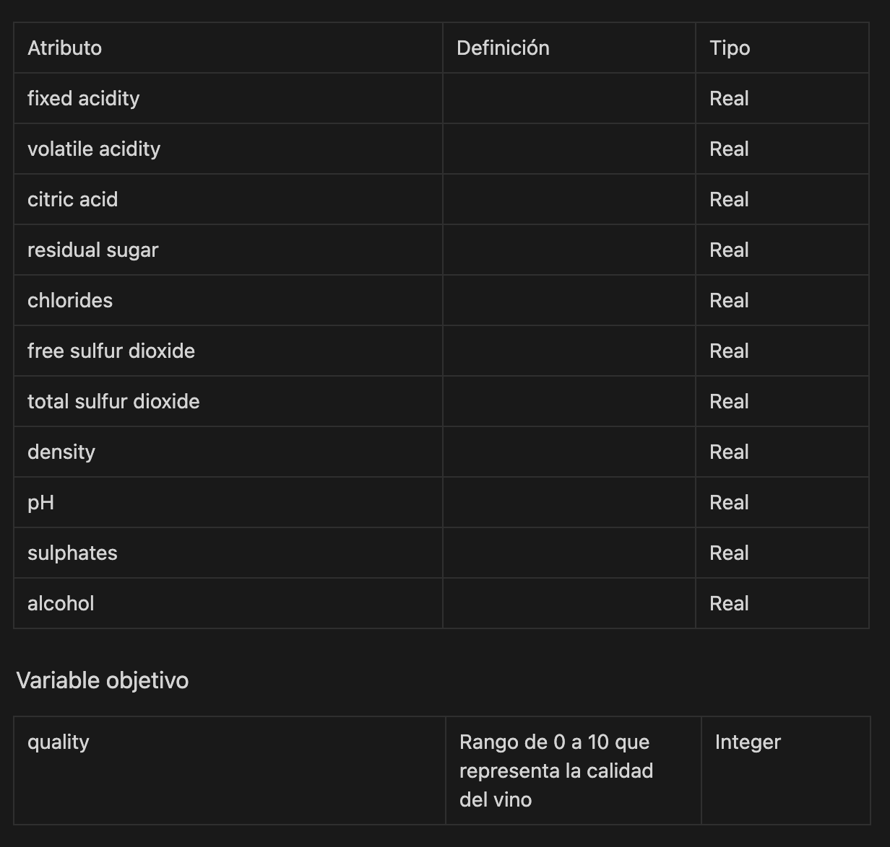 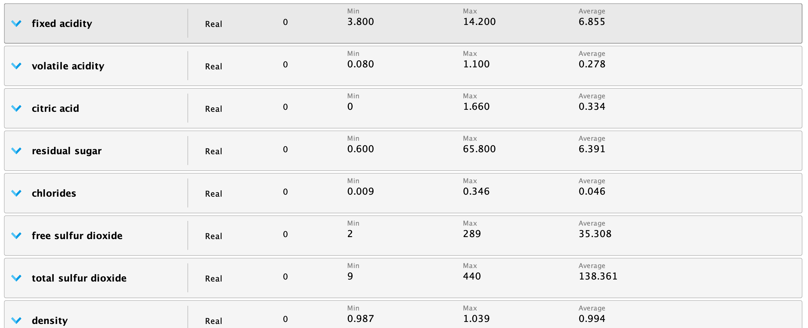 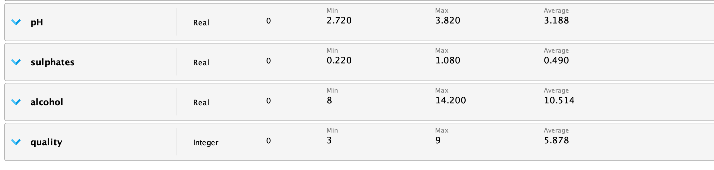Implementación RapidMiner
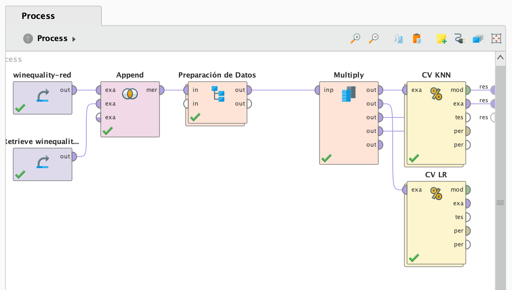Se obtienen ambos conjuntos de datos de vinos, explicados anteriormente, lo que se hace es utilizar el operador Append para juntarlos en un solo modelo. A continuación se prepara los datos dentro del subproceso de Preparación de datos y se aplican los modelos presentados.
Preparación de datos
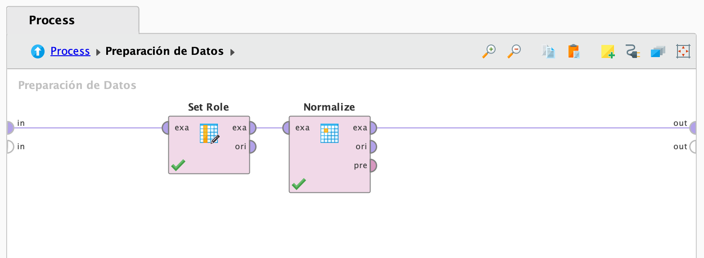Todos los atributos son numéricos, de tipo reales o enteros, ninguno tiene Missing Values lo que significa que no hace falta reemplazarlos o filtrarlos. En el caso de uso de Wine se puede ver el proceso de preparación de datos con valores perdidos.
Se debe convertir el atributo “Alcohol” al tipo polinomial, ya que este es un problema de clasificación, en donde queremos identificar el tipo de vino. También se tiene que setear el rol del atributo “Alcohol” como la variable objetivo.
Como último paso del subproceso de “Preparación de Datos” normalizamos el dataset, normalización es usada para escalar los valores en un rango especifico y puedan ajustarse a un rango en concreto. Se aplica en este caso porque existen varios atributos que tienen desviaciones muy pronunciadas y sesgos de error.
En concreto el método de normalización que será utilizado es z-transformation también llamado normalización estadística. Esta normalización obtiene la media de todos los valores y la divide por la desviación estándar. Deja a todos los atributos con media igual a 0 y variación igual a 1. El resultado es que los outliers que puedan existir pierden efecto e importancia.
Aplicación de los modelos
Se utilizan dos bloques Cross Validation para comparar el performance de dos modelos: K-Nearest Neighbor (KNN) y Regresión Lineal.
Utilizamos K-NN porque es un algoritmo que sirve tanto para problemas de regresión como de clasificación.
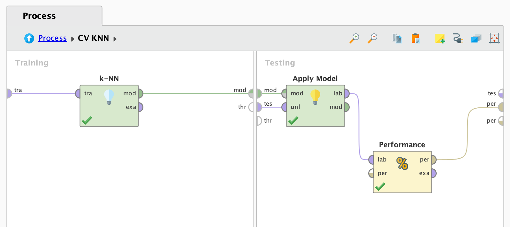Se prueba con el algoritmo de Regresión Lineal ya que se utiliza para establecer una relación lineal entre las características de entrada y la variable objetivo. Es útil cuando se supone que las relaciones son lineales y no hay una clasificación categórica clara en los datos.
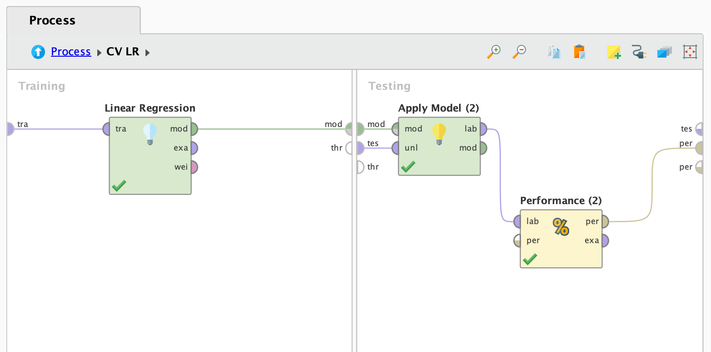(En el caso de estudio Wine se explica por qué se utiliza el bloque Cross Validation y su funcionamiento).
Resultados obtenidos
A continuación se mostrará el valor RMSE (Error cuadrático medio), este valor representa cuán cerca están las predicciones del modelo de los valores reales del conjunto de datos. Se puede observar en las imágenes, como el modelo KNN tiene un menor RMSE que el modelo de regresión lineal, lo que comprueba que es ligeramente más óptimo.
KNN
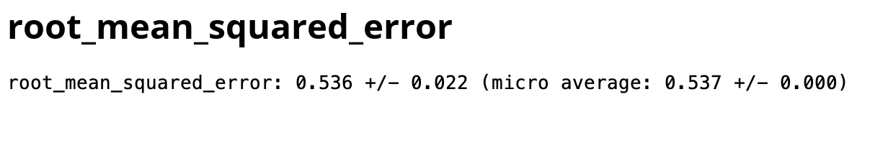Regresión Lineal
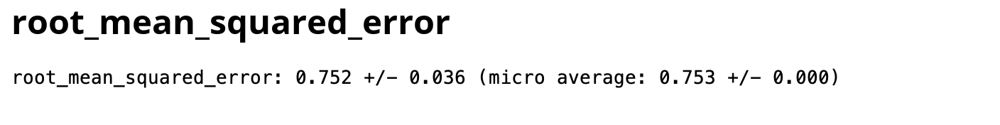Prueba de Feature Selection
Se probó utilizar los distintos operadores de Feature Selection (Backward Elimination, Forward Selection, Optimize Selection) pero estos presentaron desventaja del tiempo, la compilación de la solución pasó de demorar varios segundos a demorar varios minutos. Esto también ocurre debido a la cantidad de datos contenidos en ambos datasets, los cuales son 9796. En cuanto a la precisión obtenida, solamente se logró bajar 0.01 el RMSE.
Las siguientes 3 imagenes muestran el proceso y resultado de Feature Selection con el operador Backward Elimination.
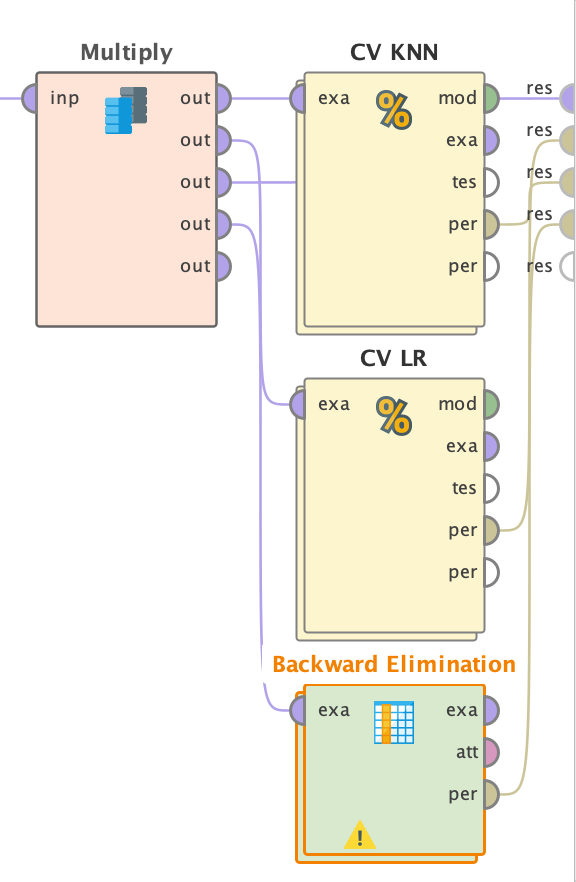 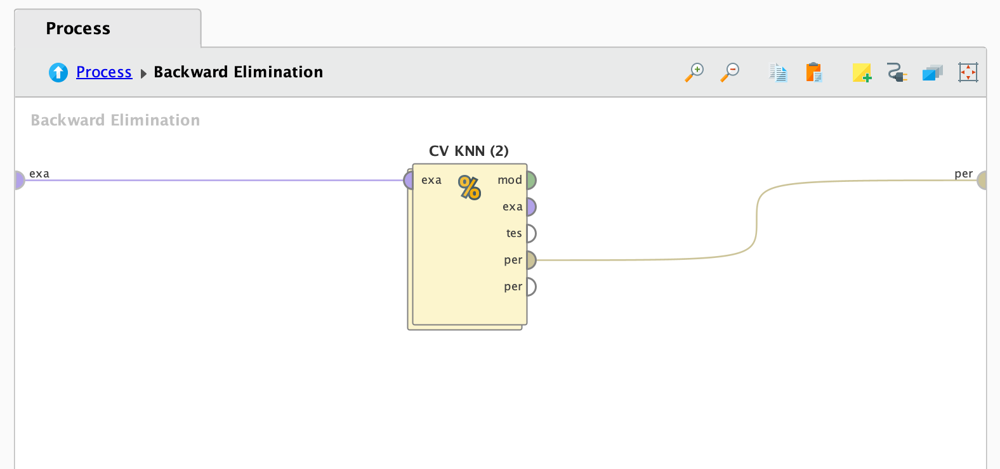 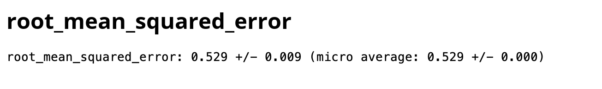Implementación Python
import pandas as pd
from sklearn.preprocessing import StandardScaler
from sklearn.model_selection import cross_val_predict, KFold
from sklearn.neighbors import KNeighborsRegressor
from sklearn.linear_model import LinearRegression
from sklearn.metrics import mean_squared_error
winequality_red = pd.read_csv('data/winequality-red')
winequality_white = pd.read_csv('data/winequality-white')
winequality_combined = pd.concat([winequality_red, winequality_white], ignore_index=True)
X = winequality_combined.drop('quality', axis=1)
y = winequality_combined['quality']
scaler = StandardScaler()
X = scaler.fit_transform(X)
kf = KFold(n_splits=10, shuffle=True, random_state=1992)
knn = KNeighborsRegressor(n_neighbors=5, weights='distance')
knn_predictions = cross_val_predict(knn, X, y, cv=kf)
knn_mse = mean_squared_error(y, knn_predictions)
lr = LinearRegression()
lr_predictions = cross_val_predict(lr, X, y, cv=kf)
lr_mse = mean_squared_error(y, lr_predictions)
print("Error cuadrático medio de k-NN:", knn_mse)
print("Error cuadrático medio de regresión lineal:", lr_mse)
Descarga de recursos
Wine Quality proceso de RapidMiner (Click para ir al enlace)
Wine Quality DataSet (Click para ir al enlace)
UCI Repository Wine Quality DataSet (Click para ir al enlace)
Wine Quality Python proceso (Click para ir al enlace)
El conjunto de datos utilizado en este caso de estudio se puede acceder mediante el enlace.